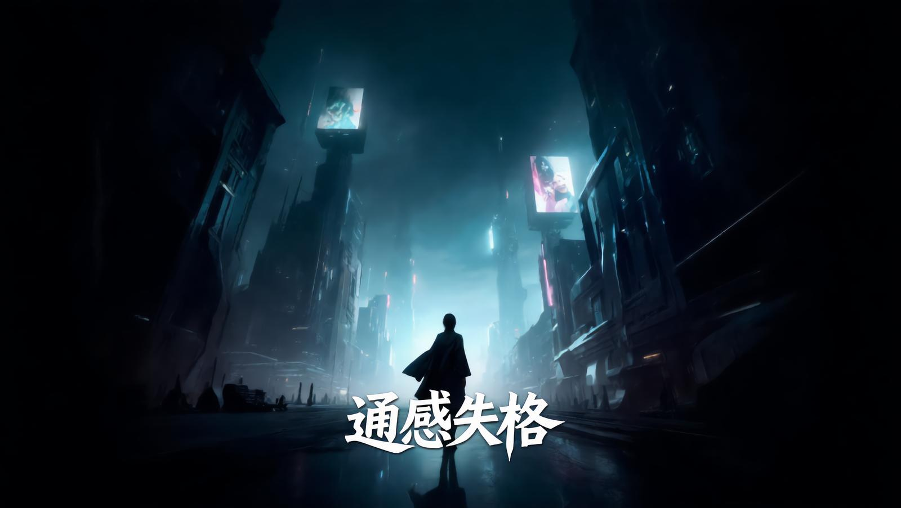
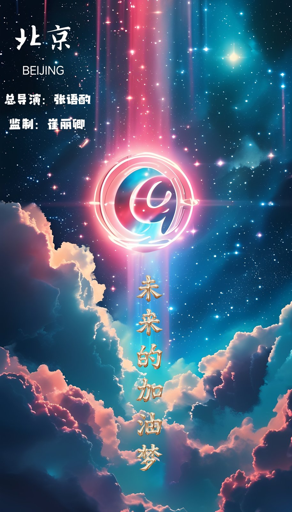
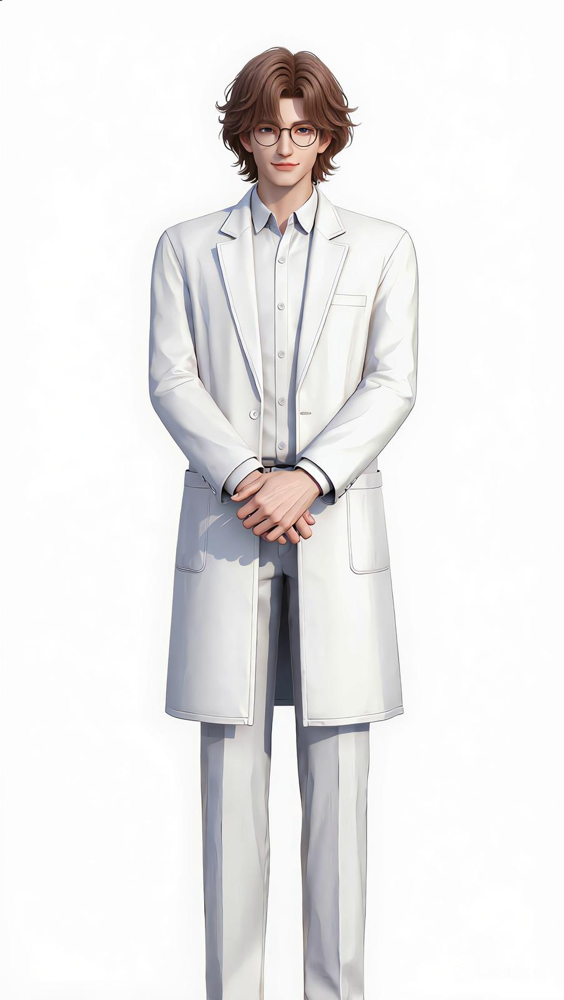
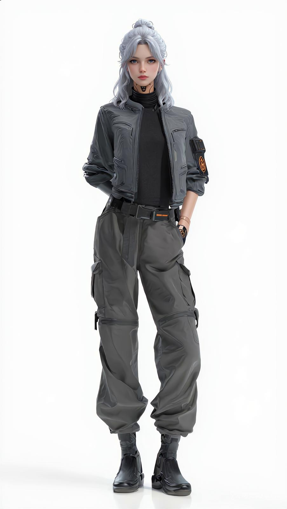
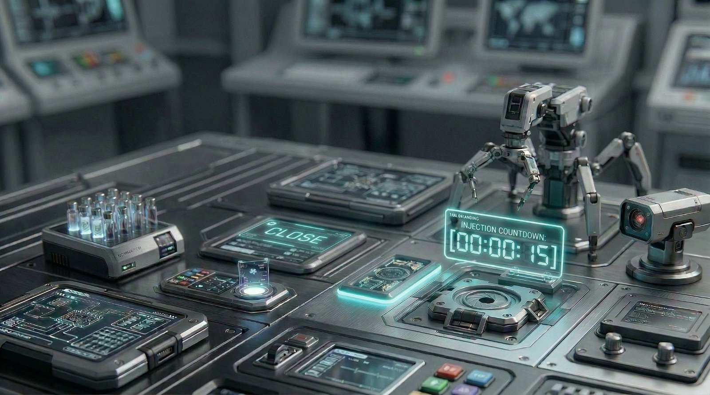
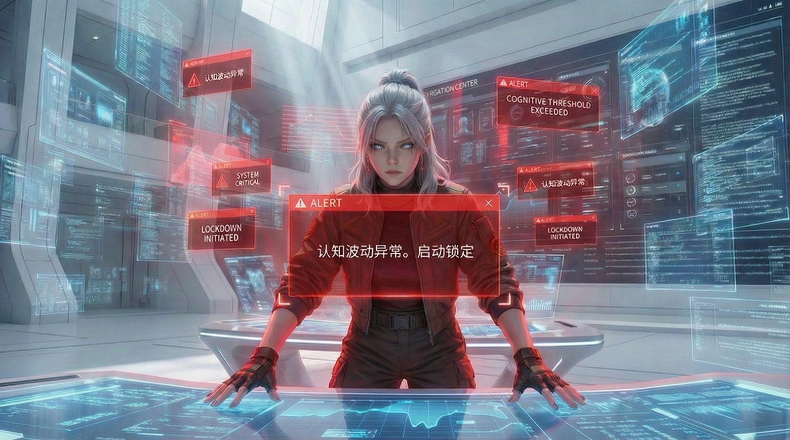
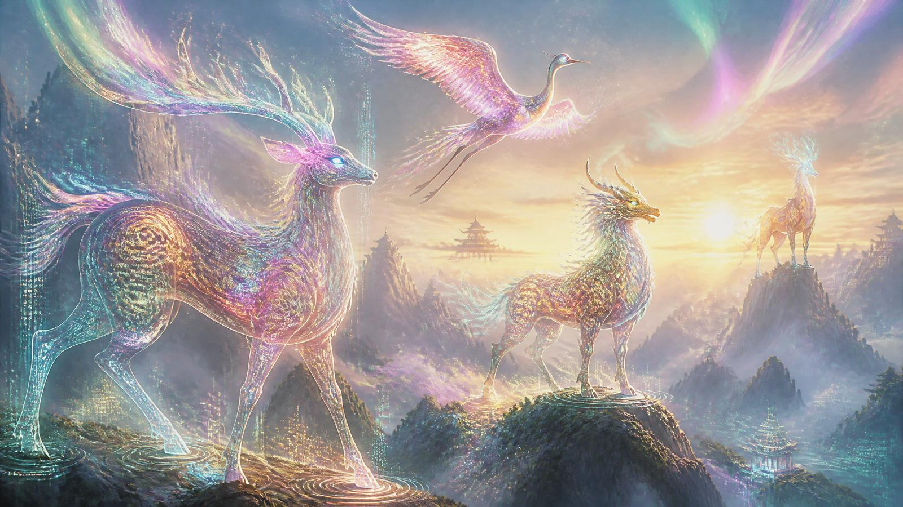
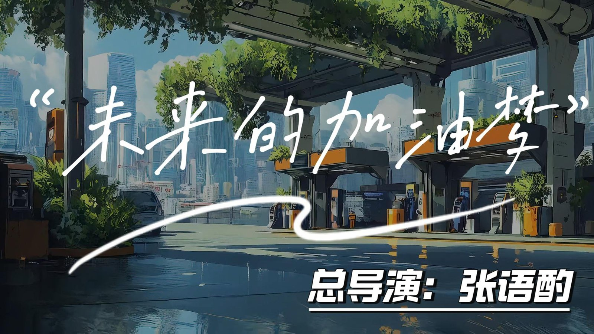

心镜
MIRROR OF MIND
AIGC短片 · 北京国际电影节AIGC单元参赛
心镜Mirror of Mind
以"镜"为隐喻，探索自我认知与内心映射的AIGC短片。通过AI生成影像构建意识流动的视觉化表达，呈现内心世界的折射与破碎。
网盘观看→六部作品，六个方向：心镜、未来的加油梦、灵兮、通感失格、AI古乐工作坊、伦敦设计节——每一部都是"概念→AI生成→人工修正→成片"的全流程实践。北影节AIGC单元参赛、iCAN大创进行中。

以"镜"为隐喻，探索自我认知与内心映射的AIGC短片。通过AI生成影像构建意识流动的视觉化表达，呈现内心世界的折射与破碎。
网盘观看→
以未来能源为切入点，用AIGC技术构建一个充满希望的加油梦境。将科技感与温暖叙事结合，在北影节AIGC单元展示AI影像在商业叙事中的可能。
网盘观看→iCAN大学生创新创业项目。以"灵"为核心意象，包含飞鸟、灵兽、人鱼等多角色AI影像实验。含完整角色三视图设计、9幕分镜首尾帧、多版本AI生成视频（2分钟版+4分钟版+完整版），是从概念到成片的全链路AIGC创作实践。
网盘观看→以"通感"为概念切入，探索AI影像中感官错位与身份消解的主题。全片三幕结构，含完整角色立绘（林司、沈策、纪真三视图）、逐幕分镜设计、AI生成素材经人工剪辑完成。北影节AIGC单元参赛作品。
网盘观看→将AI生成技术与传统古乐结合的工作坊实践记录。探索AI如何辅助古乐复原、编曲创新与视觉化呈现，是技术与传统文化的跨界实验。
网盘观看→
角色 · 沈策
角色 · 纪真
第二幕 · 分镜
第三幕 · 分镜
灵兽 · 多彩形态
横屏海报提取码: p6p6 · 点击下方按钮打开百度网盘，在线观看或下载全部AIGC短片作品。